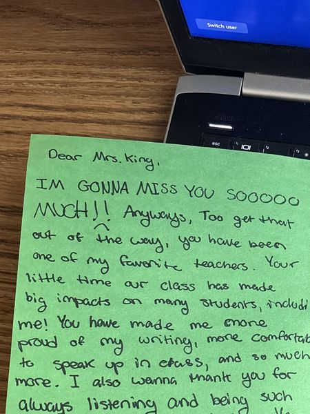
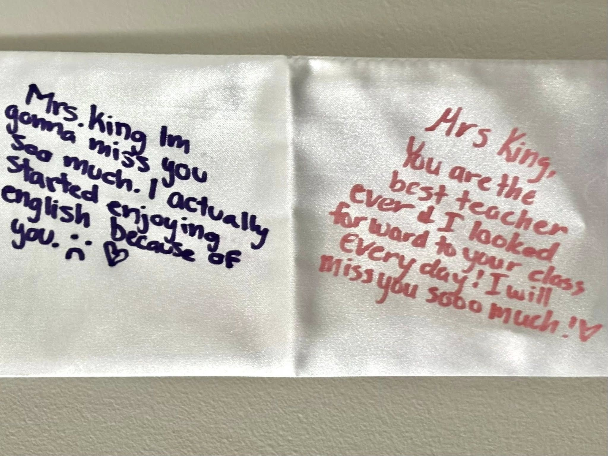
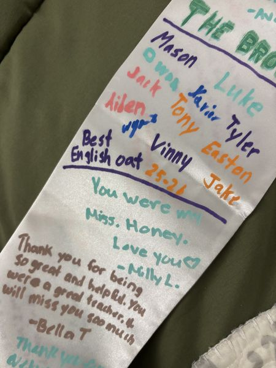
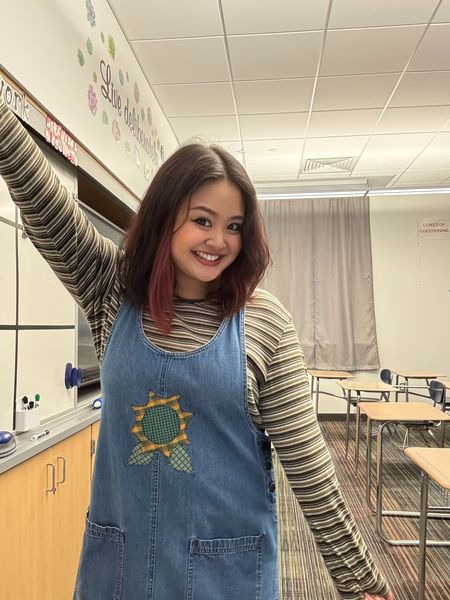

Teaching Portfolio · PPU Class of 2026
M.Ed. Secondary English Language Arts · Grades 7–12
A Pittsburgh-based educator cultivating spaces where literature sparks meaningful discussion, writing becomes a tool for self-discovery, and students are challenged to think critically about the world around them.
Portfolio Overview
Evidence-based artifacts organized around the Danielson Framework for Teaching — the professional standard recognized by Pennsylvania educators and hiring committees.
Content knowledge, student-centered lesson design, differentiated resources, and assessment — illustrated through a Julius Caesar unit from Honors and Advanced English 10.
Explore Domain →Building a culture of respect, learning, and accountability through Socratic seminars, weekly quote boards, classroom systems, and intentional physical space organization.
Explore Domain →Questioning techniques, student-led discussion, formative assessment strategies, and responsive teaching — including multimedia integration and remote instruction.
Explore Domain →Reflective teaching practice, accurate recordkeeping, family communication, professional community engagement, and continued growth through certifications and networking.
Explore Domain →From Students
Notes written by Chartiers Valley students at the close of student teaching
You are my favorite teacher ever. Thank you for making English class enjoyable.
Words cannot describe how much of a positive influence you have had on me. Your smile when I walk in the class always brightened my day, and not to mention the confidence you gave me to want to be a writer again.
Mrs. King, I'm gonna miss you so much. I actually started enjoying English because of you. You are the best teacher ever. I looked forward to your class every day. I will miss you so much.




Click or tap any image to enlarge